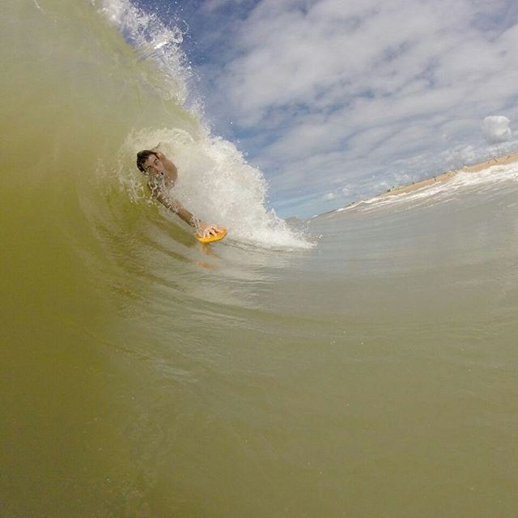
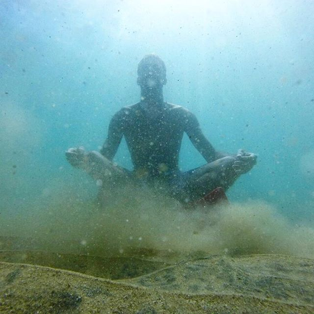
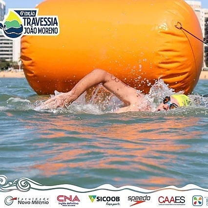
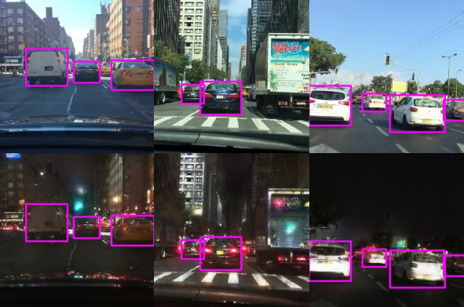
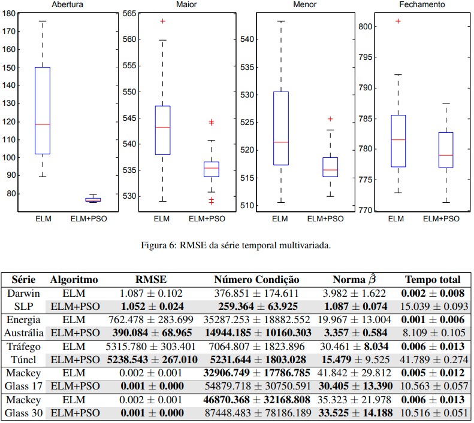

Bio
I am a M.Sc. student at
Federal University of Espírito Santo
in the
High Performance Computing Laboratory,
advised by Prof.
Thiago Oliveira-Santos.
My research interest lies in studying the ability of neural networks to learn
general representations to perceive the visual world as we humans do.
I am currently working with unsupervised domain adaptation for object detection,
taking advantage of Generative Adversarial Networks to artificially generate data.
I have previously interned at a
startup
that uses computer vision and deep learning to weigh cattle without using a scale.
In my spare time, you will probably meet me at
sea.
 |
 |
 |
Publications

Cross-Domain Car Detection Using Unsupervised Image-to-Image Translation: From Day to Night
International Joint Conference on Neural Networks (IJCNN), 2019
Vinicius F. Arruda, Thiago M. Paixão, Rodrigo F. Berriel, Alberto F. De Souza, Claudine Badue, Nicu Sebe, Thiago Oliveira-Santos
[Paper]
[Project Page]
[Code]
[Demo Video]

Particle Swarm Optimization for training artificial neural networks of type ELM: A case study for time series prediction
XLVIII Brazilian Symposium of Operational Research, 2016
Vinicius F. Arruda, Renato A. Krohling
[Paper]
Posts
"What I cannot create, I do not understand."
— Richard Feynman
An introduction with numerical examples solving logical gates and a simple training with genetic algorithm to play Flappy Bird.